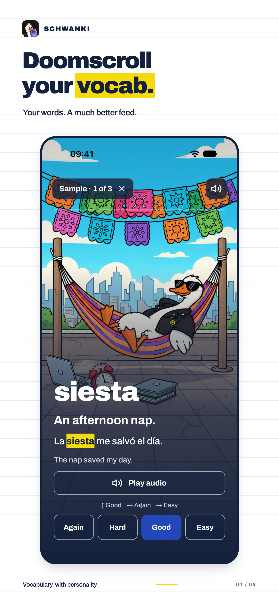
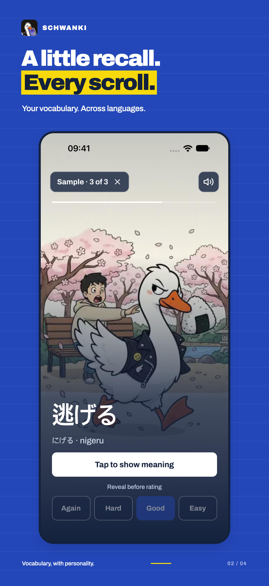
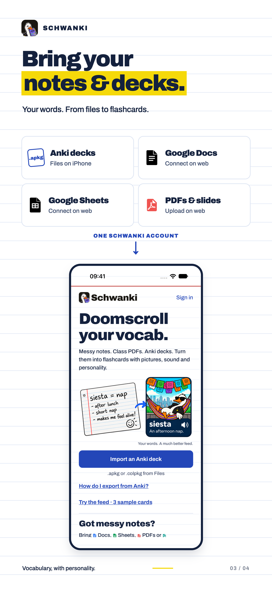
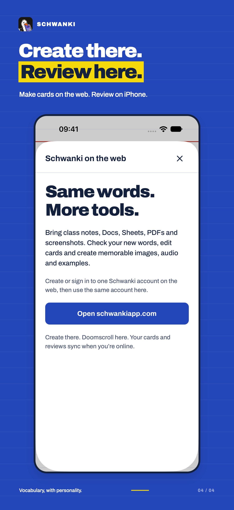

English (US) · 1320 × 2868 · Real iPhone sample screens, including a Japanese card, captured on an isolated simulator. No account data. Input-format tiles are marketing annotations: Anki decks import on iPhone; notes and documents connect or upload on the web. These are draft listing assets, not a submitted release.



